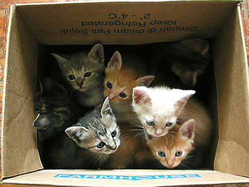
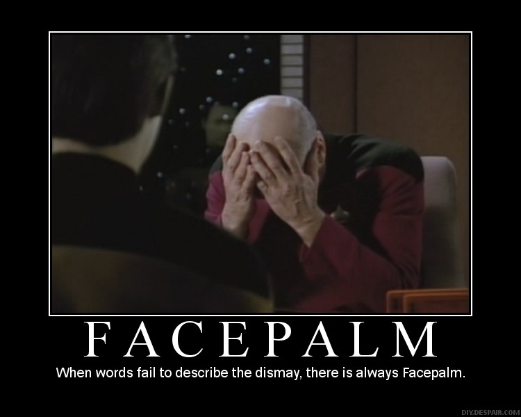
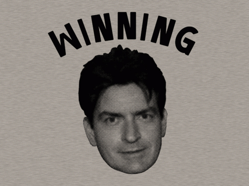
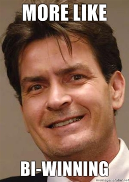
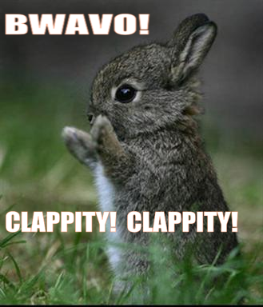

Servir 10000 clients en même temps, qui font peu de requêtes, et garder les connexions ouvertes.
Typiquement, mise à jour en temps réel du flux Twitter ou Facebook.
Ou matter des vidéos de kittehs !

4 serveurs implémentés...
...qui marchent (et supportent un
sous-ensemble de HTTP)
But : recevoir une reponse à une requête, en utilisant le protocole HTTP.
En clair, pouvoir fournir des pages à un navigateur
GET / HTTP/1.1 Host: localhost:8080 User-Agent: Mozilla/5.0 (X11; Linux i686; rv:2.0) Gecko/20100101 Firefox/4.0 Accept: text/html,application/xhtml+xml,application/xml;q=0.9,*/*;q=0.8 Accept-Language: en-us,en;q=0.5 Accept-Encoding: gzip, deflate Accept-Charset: ISO-8859-1,utf-8;q=0.7,*;q=0.7 Keep-Alive: 115 DNT: 1 Connection: keep-alive
HTTP/1.1 200 OK Server: nginx/0.7.67 Date: Mon, 11 Apr 2011 21:46:56 GMT Content-Type: text/html Content-Length: 2462 Last-Modified: Thu, 02 Dec 2010 15:05:36 GMT Connection: keep-alive Accept-Ranges: bytes [Page HTML ou autre]
(Linux kernel recent)
On réutilise les threads pour éviter le surcoût de création et de destruction.
On met des tâches dans une file, que des worker threads vont défiler pour les exécuter.
std::string trop lent
Découpage en threads trop violent
(optimisations du système perdues)

On est moins bon que les serveurs connus...
On scale mieux qu'Apache2
(avec mpm_prefork et mpm_worker)
(merci epoll(7))

On utilise plus de CPU, plus de mémoire, mais ça marche.
Apache ne peut pas le faire

Optimisations permettant d'effectuer plusieurs requêtes en une connexion
Difficile à implémenter avec notre précedente architecture,
Proposition de Brice Arnould (merci !) :
Jobqueue avec précédence
Pour vraiment gagner en perfs
splice,
sendfile)